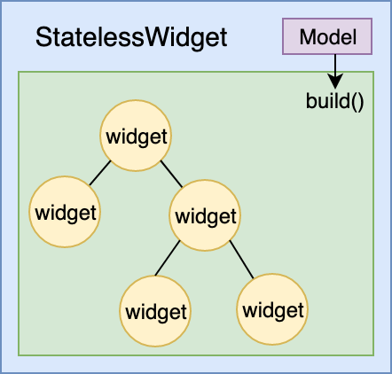
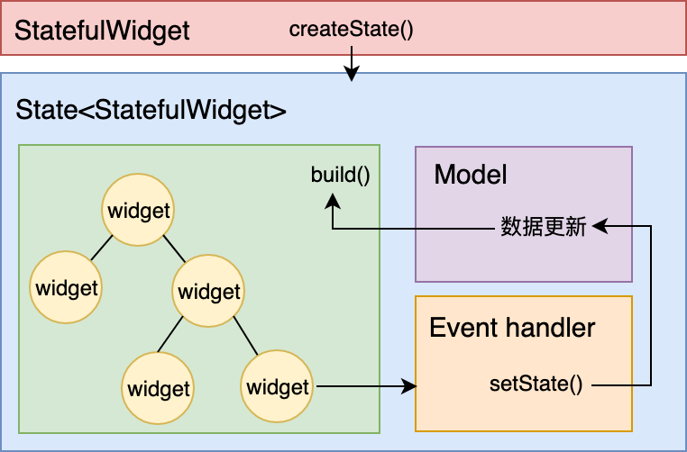

- 00 开篇词 为什么每一位大前端从业者都应该学习Flutter？.md
- 01 预习篇 · 从0开始搭建Flutter工程环境.md
- 02 预习篇 · Dart语言概览.md
- 03 深入理解跨平台方案的历史发展逻辑.md
- 04 Flutter区别于其他方案的关键技术是什么？.md
- 05 从标准模板入手，体会Flutter代码是如何运行在原生系统上的.md
- 06 基础语法与类型变量：Dart是如何表示信息的？.md
- 07 函数、类与运算符：Dart是如何处理信息的？.md
- 08 综合案例：掌握Dart核心特性.md
- 09 Widget，构建Flutter界面的基石.md
- 10 Widget中的State到底是什么？.md
- 11 提到生命周期，我们是在说什么？.md
- 12 经典控件（一）：文本、图片和按钮在Flutter中怎么用？.md
- 13 经典控件（二）：UITableView_ListView在Flutter中是什么？.md
- 14 经典布局：如何定义子控件在父容器中排版的位置？.md
- 15 组合与自绘，我该选用何种方式自定义Widget？.md
- 16 从夜间模式说起，如何定制不同风格的App主题？.md
- 17 依赖管理（一）：图片、配置和字体在Flutter中怎么用？.md
- 18 依赖管理（二）：第三方组件库在Flutter中要如何管理？.md
- 19 用户交互事件该如何响应？.md
- 20 关于跨组件传递数据，你只需要记住这三招.md
- 21 路由与导航，Flutter是这样实现页面切换的.md
- 22 如何构造炫酷的动画效果？.md
- 23 单线程模型怎么保证UI运行流畅？.md
- 24 HTTP网络编程与JSON解析.md
- 25 本地存储与数据库的使用和优化.md
- 26 如何在Dart层兼容Android_iOS平台特定实现？（一）.md
- 27 如何在Dart层兼容Android_iOS平台特定实现？（二）.md
- 28 如何在原生应用中混编Flutter工程？.md
- 29 混合开发，该用何种方案管理导航栈？.md
- 30 为什么需要做状态管理，怎么做？.md
- 31 如何实现原生推送能力？.md
- 32 适配国际化，除了多语言我们还需要注意什么_.md
- 33 如何适配不同分辨率的手机屏幕？.md
- 34 如何理解Flutter的编译模式？.md
- 35 Hot Reload是怎么做到的？.md
- 36 如何通过工具链优化开发调试效率？.md
- 37 如何检测并优化Flutter App的整体性能表现？.md
- 38 如何通过自动化测试提高交付质量？.md
- 39 线上出现问题，该如何做好异常捕获与信息采集？.md
- 40 衡量Flutter App线上质量，我们需要关注这三个指标.md
- 41 组件化和平台化，该如何组织合理稳定的Flutter工程结构？.md
- 42 如何构建高效的Flutter App打包发布环境？.md
- 43 如何构建自己的Flutter混合开发框架（一）？.md
- 44 如何构建自己的Flutter混合开发框架（二）？.md
- 特别放送 温故而知新，与你说说专栏的那些思考题.md
- 结束语 勿畏难，勿轻略.md
10 Widget中的State到底是什么？
你好，我是陈航。
通过上一篇文章，我们已经深入理解了Widget是Flutter构建界面的基石，也认识了Widget、Element、RenderObject是如何互相配合，实现图形渲染工作的。Flutter在底层做了大量的渲染优化工作，使得我们只需要通过组合、嵌套不同类型的Widget，就可以构建出任意功能、任意复杂度的界面。
同时，我们通过前面的学习，也已经了解到Widget有StatelessWidget和StatefulWidget两种类型。StatefulWidget应对有交互、需要动态变化视觉效果的场景，而StatelessWidget则用于处理静态的、无状态的视图展示。StatefulWidget的场景已经完全覆盖了StatelessWidget，因此我们在构建界面时，往往会大量使用StatefulWidget来处理静态的视图展示需求，看起来似乎也没什么问题。
那么，StatelessWidget存在的必要性在哪里？StatefulWidget是否是Flutter中的万金油？在今天这篇文章中，我将着重和你介绍这两种类型的区别，从而帮你更好地理解Widget，掌握不同类型Widget的正确使用时机。
UI编程范式
要想理解StatelessWidget与StatefulWidget的使用场景，我们首先需要了解，在Flutter中，如何调整一个控件（Widget）的展示样式，即UI编程范式。
如果你有过原生系统（Android、iOS）或原生JavaScript开发经验的话，应该知道视图开发是命令式的，需要精确地告诉操作系统或浏览器用何种方式去做事情。比如，如果我们想要变更界面的某个文案，则需要找到具体的文本控件并调用它的控件方法命令，才能完成文字变更。
下述代码分别展示了在Android、iOS及原生Javascript中，如何将一个文本控件的展示文案更改为Hello World：
// Android设置某文本控件展示文案为Hello World
TextView textView = (TextView) findViewById(R.id.txt);
textView.setText("Hello World");
// iOS设置某文本控件展示文案为Hello World
UILabel *label = (UILabel *)[self.view viewWithTag:1234];
label.text = @"Hello World";
// 原生JavaScript设置某文本控件展示文案为Hello World
document.querySelector("#demo").innerHTML = "Hello World!";
与此不同的是，Flutter的视图开发是声明式的，其核心设计思想就是将视图和数据分离，这与React的设计思路完全一致。
对我们来说，如果要实现同样的需求，则要稍微麻烦点：除了设计好Widget布局方案之外，还需要提前维护一套文案数据集，并为需要变化的Widget绑定数据集中的数据，使Widget根据这个数据集完成渲染。
但是，当需要变更界面的文案时，我们只要改变数据集中的文案数据，并通知Flutter框架触发Widget的重新渲染即可。这样一来，开发者将无需再精确关注UI编程中的各个过程细节，只要维护好数据集即可。比起命令式的视图开发方式需要挨个设置不同组件（Widget）的视觉属性，这种方式要便捷得多。
总结来说，命令式编程强调精确控制过程细节；而声明式编程强调通过意图输出结果整体。对应到Flutter中，意图是绑定了组件状态的State，结果则是重新渲染后的组件。在Widget的生命周期内，应用到State中的任何更改都将强制Widget重新构建。
其中，对于组件完成创建后就无需变更的场景，状态的绑定是可选项。这里“可选”就区分出了Widget的两种类型，即：StatelessWidget不带绑定状态，而StatefulWidget带绑定状态。当你所要构建的用户界面不随任何状态信息的变化而变化时，需要选择使用StatelessWidget，反之则选用StatefulWidget。前者一般用于静态内容的展示，而后者则用于存在交互反馈的内容呈现中。
接下来，我分别和你介绍StatelessWidget和StatefulWidget，从源码分析它们的区别，并总结一些关于Widget选型的基本原则。
StatelessWidget
在Flutter中，Widget采用由父到子、自顶向下的方式进行构建，父Widget控制着子Widget的显示样式，其样式配置由父Widget在构建时提供。
用这种方式构建出的Widget，有些（比如Text、Container、Row、Column等）在创建时，除了这些配置参数之外不依赖于任何其他信息，换句话说，它们一旦创建成功就不再关心、也不响应任何数据变化进行重绘。在Flutter中，这样的Widget被称为StatelessWidget（无状态组件）。
这里有一张StatelessWidget的示意图，如下所示：

图1 StatelessWidget 示意图
接下来，我以Text的部分源码为例，和你说明StatelessWidget的构建过程。
class Text extends StatelessWidget {
//构造方法及属性声明部分
const Text(this.data, {
Key key,
this.textAlign,
this.textDirection,
//其他参数
...
}) : assert(data != null),
textSpan = null,
super(key: key);
final String data;
final TextAlign textAlign;
final TextDirection textDirection;
//其他属性
...
@override
Widget build(BuildContext context) {
...
Widget result = RichText(
//初始化配置
...
)
);
...
return result;
}
}
可以看到，在构造方法将其属性列表赋值后，build方法随即将子组件RichText通过其属性列表（如文本data、对齐方式textAlign、文本展示方向textDirection等）初始化后返回，之后Text内部不再响应外部数据的变化。
那么，什么场景下应该使用StatelessWidget呢？
这里，我有一个简单的判断规则：父Widget是否能通过初始化参数完全控制其UI展示效果？如果能，那么我们就可以使用StatelessWidget来设计构造函数接口了。
我准备了两个简单的小例子，来帮助你理解这个判断规则。
第一个小例子是，我需要创建一个自定义的弹窗控件，把使用App过程中出现的一些错误信息提示给用户。这个组件的父Widget，能够完全在子Widget初始化时将组件所需要的样式信息和错误提示信息传递给它，也就意味着父Widget通过初始化参数就能完全控制其展示效果。所以，我可以采用继承StatelessWidget的方式，来进行组件自定义。
第二个小例子是，我需要定义一个计数器按钮，用户每次点击按钮后，按钮颜色都会随之加深。可以看到，这个组件的父Widget只能控制子Widget初始的样式展示效果，而无法控制在交互过程中发生的颜色变化。所以，我无法通过继承StatelessWidget的方式来自定义组件。那么，这个时候就轮到StatefulWidget出场了。
StatefulWidget
与StatelessWidget相对应的，有一些Widget（比如Image、Checkbox）的展示，除了父Widget初始化时传入的静态配置之外，还需要处理用户的交互（比如，用户点击按钮）或其内部数据的变化（比如，网络数据回包），并体现在UI上。
换句话说，这些Widget创建完成后，还需要关心和响应数据变化来进行重绘。在Flutter中，这一类Widget被称为StatefulWidget（有状态组件）。这里有一张StatefulWidget的示意图，如下所示：

图2 StatefulWidget 示意图
看到这里，你可能有点困惑了。因为，我在上一篇文章“Widget，构建Flutter界面的基石”中和你分享到，Widget是不可变的，发生变化时需要销毁重建，所以谈不上状态。那么，这到底是怎么回事呢？
其实，StatefulWidget是以State类代理Widget构建的设计方式实现的。接下来，我就以Image的部分源码为例，和你说明StatefulWidget的构建过程，来帮助你理解这个知识点。
和上面提到的Text一样，Image类的构造函数会接收要被这个类使用的属性参数。然而，不同的是，Image类并没有build方法来创建视图，而是通过createState方法创建了一个类型为_ImageState的state对象，然后由这个对象负责视图的构建。
这个state对象持有并处理了Image类中的状态变化，所以我就以_imageInfo属性为例来和你展开说明。
_imageInfo属性用来给Widget加载真实的图片，一旦State对象通过_handleImageChanged方法监听到_imageInfo属性发生了变化，就会立即调用_ImageState类的setState方法通知Flutter框架：“我这儿的数据变啦，请使用更新后的_imageInfo数据重新加载图片！”。而，Flutter框架则会标记视图状态，更新UI。
class Image extends StatefulWidget {
//构造方法及属性声明部分
const Image({
Key key,
@required this.image,
//其他参数
}) : assert(image != null),
super(key: key);
final ImageProvider image;
//其他属性
...
@override
_ImageState createState() => _ImageState();
...
}
class _ImageState extends State<Image> {
ImageInfo _imageInfo;
//其他属性
...
void _handleImageChanged(ImageInfo imageInfo, bool synchronousCall) {
setState(() {
_imageInfo = imageInfo;
});
}
...
@override
Widget build(BuildContext context) {
final RawImage image = RawImage(
image: _imageInfo?.image,
//其他初始化配置
...
);
return image;
}
...
}
可以看到，在这个例子中，Image以一种动态的方式运行：监听变化，更新视图。与StatelessWidget通过父Widget完全控制UI展示不同，StatefulWidget的父Widget仅定义了它的初始化状态，而其自身视图运行的状态则需要自己处理，并根据处理情况即时更新UI展示。
好了，至此我们已经通过StatelessWidget与StatefulWidget的源码，理解了这两种类型的Widget。这时，你可能会问，既然StatefulWidget不仅可以响应状态变化，又能展示静态UI，那么StatelessWidget这种只能展示静态UI的Widget，还有存在的必要吗？
StatefulWidget不是万金油，要慎用
对于UI框架而言，同样的展示效果一般可以通过多种控件实现。从定义来看，StatefulWidget仿佛是万能的，替代StatelessWidget看起来合情合理。于是StatefulWidget的滥用，也容易因此变得顺理成章，难以避免。
但事实是，StatefulWidget的滥用会直接影响Flutter应用的渲染性能。
接下来，在今天这篇文章的最后，我就再带你回顾一下Widget的更新机制，来帮你意识到完全使用StatefulWidget的代价：
Widget是不可变的，更新则意味着销毁+重建（build）。StatelessWidget是静态的，一旦创建则无需更新；而对于StatefulWidget来说，在State类中调用setState方法更新数据，会触发视图的销毁和重建，也将间接地触发其每个子Widget的销毁和重建。
那么，这意味着什么呢？
如果我们的根布局是一个StatefulWidget，在其State中每调用一次更新UI，都将是一整个页面所有Widget的销毁和重建。
在上一篇文章中，我们了解到，虽然Flutter内部通过Element层可以最大程度地降低对真实渲染视图的修改，提高渲染效率，而不是销毁整个RenderObject树重建。但，大量Widget对象的销毁重建是无法避免的。如果某个子Widget的重建涉及到一些耗时操作，那页面的渲染性能将会急剧下降。
因此，正确评估你的视图展示需求，避免无谓的StatefulWidget使用，是提高Flutter应用渲染性能最简单也是最直接的手段。
在接下来的第29篇文章“为什么需要做状态管理，怎么做？”中，我会继续带你学习StatefulWidget常见的几种状态管理方法，与你更为具体地介绍在不同场景中，该选用何种Widget的基本原则。这些原则，你都可以根据实际需要应用到后续工作中。
总结
好了，今天关于StatelessWidget与StatefulWidget的介绍，我们就到这里了。我们一起来回顾下今天的主要知识点。
首先，我带你了解了Flutter基于声明式的UI编程范式，并通过阅读两个典型Widget（Text与Image）源码的方式，与你一起学习了StatelessWidget与StatefulWidget的基本设计思路。
由于Widget采用由父到子、自顶向下的方式进行构建，因此在自定义组件时，我们可以根据父Widget是否能通过初始化参数完全控制其UI展示效果的基本原则，来判断究竟是继承StatelessWidget还是StatefulWidget。
然后，针对StatefulWidget的“万金油”误区，我带你重新回顾了Widget的UI更新机制。尽管Flutter会通过Element层去最大程度降低对真实渲染视图的修改，但大量的Widget销毁重建无法避免，因此避免StatefulWidget的滥用，是最简单、直接地提升应用渲染性能的手段。
需要注意的是，除了我们主动地通过State刷新UI之外，在一些特殊场景下，Widget的build方法有可能会执行多次。因此，我们不应该在这个方法内部，放置太多有耗时的操作。而关于这个build方法在哪些场景下会执行，以及为什么会执行多次，我会在下一篇文章“提到生命周期，我们是在说什么？”中，与你一起详细分析。
思考题
Flutter工程应用模板是计数器示例应用Demo，这个Demo的根节点是一个StatelessWidget。请在保持原有功能的情况下，将这个Demo改造为根节点为StatefulWidget的App。你能通过数据打点，得出这两种方式的性能差异吗？
欢迎你在评论区给我留言分享你的观点，我会在下一篇文章中等待你！感谢你的收听，也欢迎你把这篇文章分享给更多的朋友一起阅读。
© 2019 - 2023 Liangliang Lee. Powered by gin and hexo-theme-book.